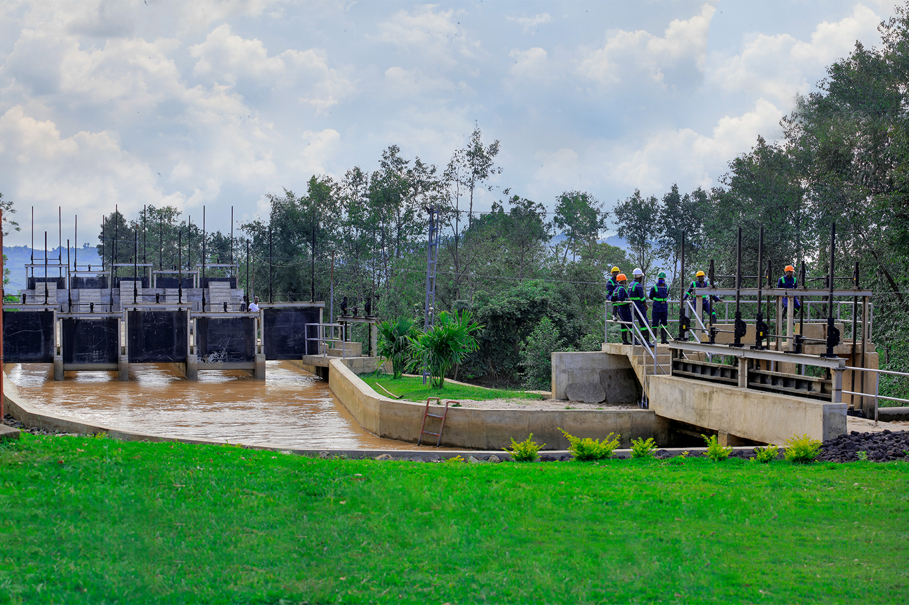

DESIGN & PREPARATORY WORKS
Design and preparatory works supporting the upgrade and rehabilitation of the Keya, Nkora and Cyimbili Hydropower Plants.
CEC carried out construction works to upgrade and rehabilitate the Keya, Nkora and Cyimbili Hydropower Plants.
The works covered design and preparatory activities, access infrastructure, intake structures, penstock rehabilitation, control equipment replacement and associated civil works to improve the reliability and operation of the three plants.

Design and preparatory works supporting the upgrade and rehabilitation of the Keya, Nkora and Cyimbili Hydropower Plants.
Construction of access roads and the connected bridge required to support access to the hydropower facilities.
Construction of upgraded reinforced-concrete intake and river diversion structures, including intake structures and sand traps.
Rehabilitation and protection of the penstock systems serving the hydropower plants.
Replacement of defaulted control equipment, including drain valves, water-level sensors and charge-voltage regulators for the three HPPs.
Construction of retaining walls and rehabilitation of critical water-channel sections, canals and forebay tanks, together with associated protection works.
